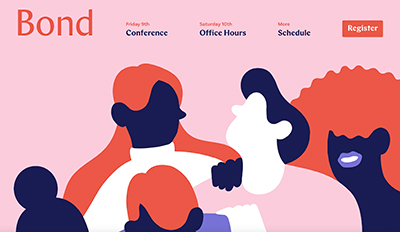
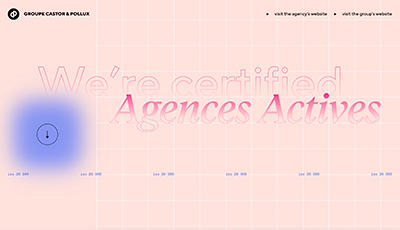

Project Summary
This final project's goal is to take a previous studio project and revamp it. I will be reworking my Mad Libs 2.0 project.
This final project's goal is to take a previous studio project and revamp it. I will be reworking my Mad Libs 2.0 project.
This website shares similar intentions with my desired finished Mad Libs project. The color palette is similar to what I imagine for my project. I love the pink background and the contrasting blue font. The vector artwork is also a sleek and clean look as well, it’s a style of design that I definitely lean more towards. The website is interactive, with scroll and mouse-over hover effects. I want to implement some hover effects on to my revamped page, so it also shares similarities with my intentions in that aspect. The overall experience was very nice. I felt relaxed and happy scrolling through the site as I was just in awe of how beautiful everything was coded to be.
This website is very aesthetically pleasing. I love the pink hues used. The gradient and the font choice used are something I’d love to also implement in my own design. Like the first project comparison website I analyzed, there is also a pop of dark blue incorporated. But instead of the font, it is an additional mouse element. The appearance of dark blue just solidifies that it is a great color to accompany pink, which is why I feel like it would be an integral part of my project as well.
My goal is to enhance my project using materials I learned in class, especially material after the project was finished. It will be helpful for me to step outside my comfort zone and experiment more with animation and overlays. I can also work more on beautifying my pages visually. I feel like my project lacked some pizazz, so this is a chance to revamp and make it look more professional. I personally like the idea of what my Mad Libs project was trying to accomplish, but am not completely happy with how it looks. This final project will give me more time to achieve the desired state.
I have a pretty set color palette for my project. The concept is a valentine’s date generator, so the colors pink and red are staples to bringing that theme alive. But solid colors can be boring, for the redesign, I’m thinking of incorporating some textures and gradients. I will also work more on the contrast between the graphics and the text. I used a dark red color for the text, but it might be a bit conflicting with the other red hues on the page. I could possibly settle for white text and make the background a darker shade of pink. In terms of gestalt principles, I can definitely work more on the proximity of my elements. The form boxes are a bit too close to each other and make the page feel crowded. I can fix this by splitting the form boxes into two separate columns.
Taking the critiques from my groupmates, I can work on the alignment of the form on the page. It is currently in a singular file line, breaking it up and making at least two columns will help break up the page more and allow the viewer to digest the information easier. I also did not incorporate a pop-up on my Mad Libs, a pop-up would make the page look a lot cleaner and add an extra interactive component for the user. I also want some animation on the page. I can either add a mouse-over effect that will enlarge the image upon hover or have the graphic move on its own while the user is on the page.
My intended goal is for the user to have fun filling out the form and enjoy their read-through of the final Mad Lib. A lot of this is achieved by design and making the user look at something aesthetically pleasing while they are on the site. Seeing beautiful images and colors will automatically correlate their experience of the website to a positive one. This can be accomplished by the things I have outlined in my design and interaction strategies.